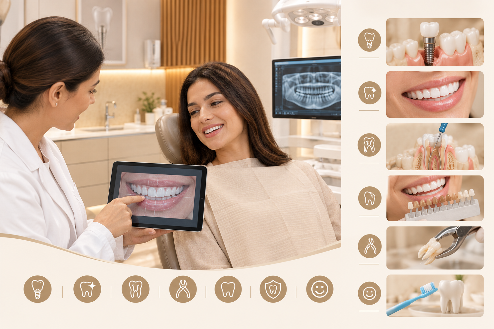
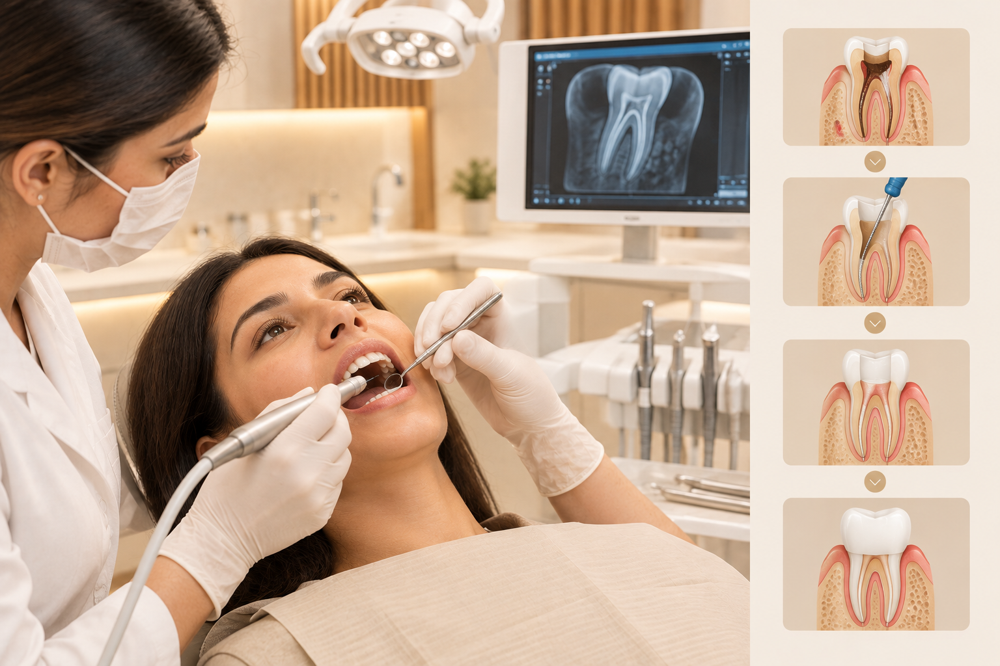
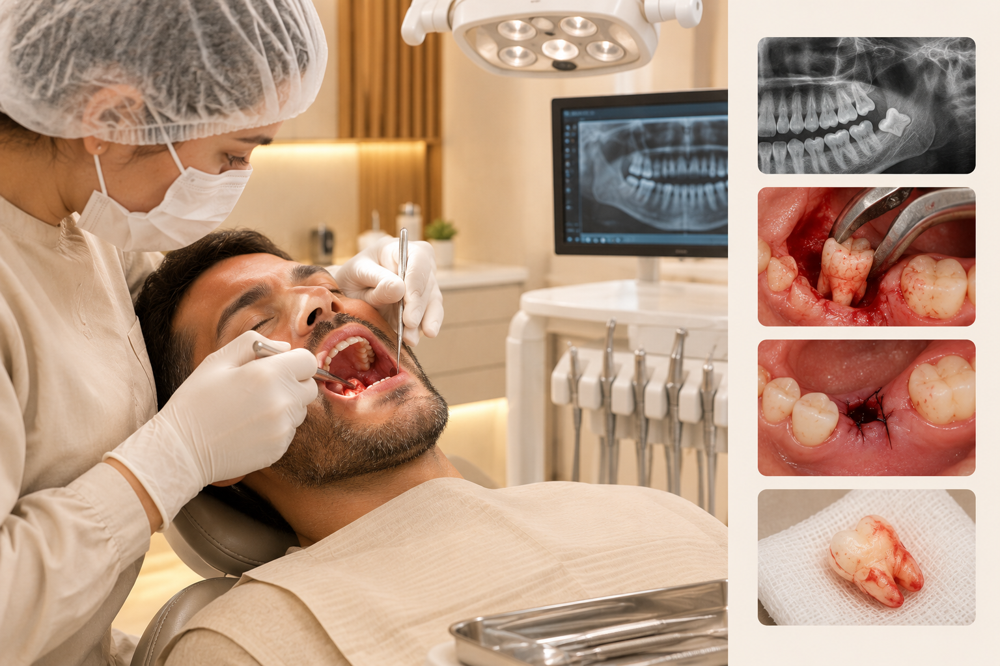
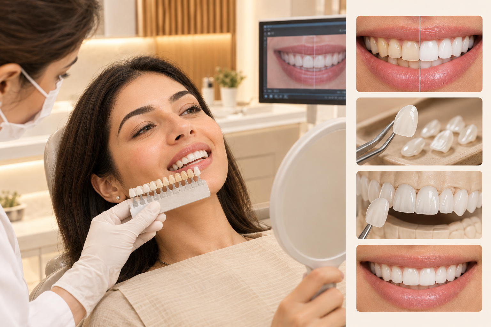

Comprehensive dental care in Al Jurf, Ajman — explore every treatment we offer, from dental implants to smile design.

At Dr. Zahers Aesthetic Dental Center, we provide personalised dental care designed around your oral health, comfort, and smile goals. From advanced dental implants and full mouth rehabilitation to cosmetic dentistry and essential preventive treatments, our experienced team combines modern technology with careful treatment planning.
Located near Ajman Court in Al Jurf, our clinic provides a calm and professional environment where every treatment is explained clearly and planned with your individual needs in mind.

Dental implants are a long-term solution for replacing missing teeth, designed to restore both the appearance and function of your natural smile. At Dr. Zahers Aesthetic Dental Center, implant treatment begins with careful assessment and digital planning to achieve precise and predictable results.
Our implant solutions are planned around your bone structure, oral health, bite, and aesthetic requirements. From a single missing tooth to more complex cases, we focus on creating restorations that look natural, feel comfortable, and function effectively.

An implant crown is the visible tooth restoration attached to a dental implant. A carefully designed crown can restore the shape, shade, strength, and function of your missing tooth while blending naturally with the surrounding teeth.
Our implant crowns are customised to provide a comfortable fit and an aesthetically balanced result. We consider your existing teeth, facial appearance, bite, and smile when planning the final restoration.

Full mouth rehabilitation is a comprehensive treatment approach for patients with multiple dental concerns, such as missing, damaged, worn, or heavily restored teeth.
Rather than treating individual problems separately, we assess your overall oral health, bite, tooth structure, function, and aesthetics before creating a coordinated treatment plan. Depending on your needs, treatment may combine implants, crowns, bridges, veneers, restorative dentistry, and other procedures. Our goal is to restore your mouth as a whole — improving health, function, comfort, and appearance through a carefully planned treatment journey.

In some patients, there may not be enough healthy bone to support a dental implant. Bone grafting and sinus lift procedures can help create the necessary foundation for implant treatment in carefully selected cases.
Our approach begins with detailed assessment and digital planning to understand your existing bone structure and determine the most appropriate treatment approach. These procedures can help prepare the jaw for future implant placement while supporting the stability and long-term success of the restoration.

Modern implant dentistry starts with accurate planning. Our digital implant planning approach uses 3D imaging and digital assessment to understand the position of the teeth, nerves, bone, and surrounding structures before treatment.
This allows the dental team to carefully evaluate the proposed implant position and develop a treatment plan tailored to your individual anatomy. Digital planning can help improve treatment precision, predictability, and overall patient experience.

Regular professional cleaning is an important part of maintaining healthy teeth and gums. Our dental hygiene treatments help remove plaque, tartar, and surface stains that regular brushing may not completely eliminate.
For patients looking to brighten their smile, professional whitening can help reduce certain types of tooth discolouration and improve overall smile appearance. We take a gentle approach to hygiene and cosmetic treatments, with care tailored to the condition and needs of your teeth.

When the inner tissue of a tooth becomes infected or inflamed, root canal treatment may be required to save the natural tooth and prevent the problem from progressing.
Our root canal treatment focuses on removing infection, carefully cleaning the affected area, and restoring the tooth so that it can continue to function. Preserving your natural tooth, whenever possible, can help maintain your bite and overall oral function.

Some teeth cannot be removed through a simple extraction and may require a surgical approach. This can include certain wisdom teeth, severely damaged teeth, or teeth with complex roots.
Our team carefully evaluates each case before recommending an extraction and explains the procedure and aftercare requirements clearly. Patient comfort and safety remain central throughout the treatment process, with appropriate aftercare guidance provided following the procedure.

A beautiful smile should complement your face rather than look artificial. Our veneers and smile design treatments are planned around your individual facial features, tooth proportions, smile line, and aesthetic preferences.
Veneers can be used to improve the appearance of selected teeth by addressing concerns such as shape, colour, proportion, and certain cosmetic imperfections. Our smile design approach focuses on creating a balanced and natural-looking result while maintaining harmony between your teeth and overall appearance.
At Dr. Zahers Aesthetic Dental Center, every treatment begins with understanding your needs. Our experienced dental team combines clinical expertise, modern technology, digital planning, and personalised care to help you achieve a healthy and confident smile.
Whether you need routine dental care, cosmetic enhancement, or advanced implant treatment, we are here to guide you through every step.